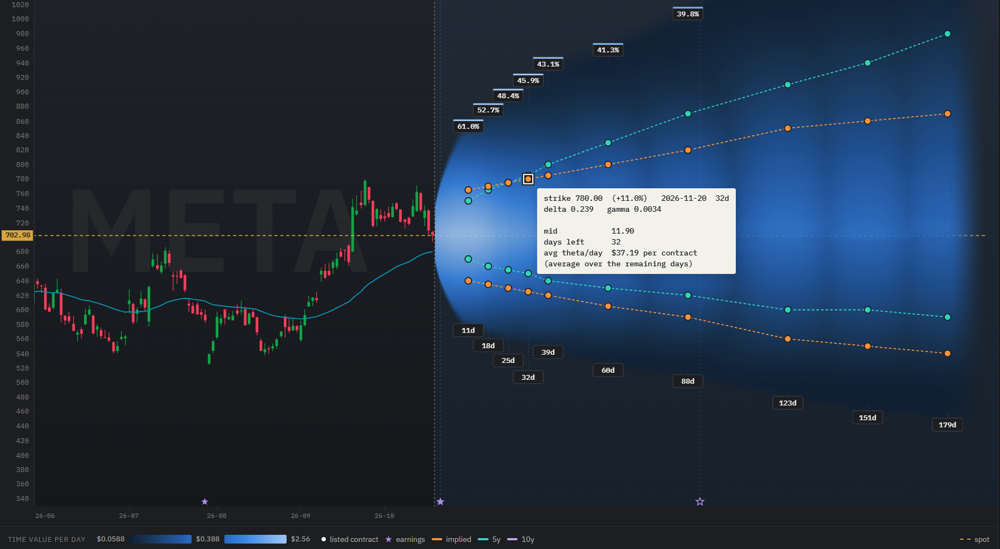

Covered calls: how to find the strike that pays the most
You hold 100 shares of META and want to earn from them by selling a covered call. Every strike is a trade-off: too far out and the call pays almost nothing, too close and you give up the stock's upside. This guide shows how to find the sweet spot, the covered call strike that pays well and still leaves META room to run. Throughout the guide we work through a real example: META's option chain on 19 October 2026, analyzed with OptionsCone.
In short: OptionsCone shows, for every strike and expiry of META, two probabilities of the price finishing above the strike: one from option prices (risk-neutral pricing) and one from META's own realized moves. Next to them it shows profitability and liquidity figures for every contract, such as the time value it pays per day and its spread. Where the two probabilities differ, you see which covered calls pay you fairly for the upside you give away, and which ones sell it too cheap.
What is a covered call?
A covered call is an option strategy for shareholders. You own 100 shares of a stock and sell one call option on them. The buyer of the call pays you a premium today, and in return gets the right to buy your shares at the strike price until the call expires.
- If the stock stays below the strike, the call expires worthless. You keep the premium and your shares, and can sell the next call.
- If the stock finishes above the strike, your shares are sold at the strike. You keep the premium and the gain up to the strike, but not the gain beyond it.
The call is "covered" because the shares you own cover the obligation to deliver them. Many investors use covered calls to earn regular income from shares they hold anyway.
What is the best strike for a covered call?
A covered call pays you a premium today. In return, you hand over every gain above the strike until expiry. That gives two ways to get it wrong:
- Strike too far out of the money: the call pays so little that it is hardly worth selling.
- Strike too close to the price: the premium looks attractive, but META only has to rise a little before your gains from the stock are capped.
The best covered call strike sits between the two: the highest premium for the least upside given away. Finding it takes two numbers for every strike: how likely META finishes above it, and how much the call pays.
How likely is my covered call to finish in the money?
Download META in OptionsCone and look at the probability cone above the price. Every dot is a listed call. Set the contour to expire and, for example, 20%: the line then marks, expiry by expiry, the strike META finishes above with a 20% probability. That is how often a covered call at that strike would end in the money and cap your gains from META stock.
Switch the contour to touch and the line moves further out. A touch, the price reaching the strike at any point before expiry, is roughly twice as likely as finishing above it. For a covered call the touch is the moment that matters in practice: it is when you decide whether to roll the call up and out to give the stock more room for profits.
How options are priced, and what that means for probabilities
Options are priced risk-neutrally: the market prices every option as if the stock grew only at the risk-free interest rate. This is not a mispricing, and there is a good reason why option prices have to work this way: an option can be replicated by trading the stock itself, and the cost of that replication does not depend on which way the stock drifts. If option prices included the stock's expected extra return, anyone could replicate the option, sell it at that price and earn a riskless profit. So the market leaves the stock's extra return out of every option price.
Every probability read from option prices therefore carries the same assumption: no drift beyond the risk-free rate. This holds for any tool that works from option prices, including your broker's probability figures and delta.
OptionsCone shows these probabilities in the cone in implied mode. It reads them from the implied volatility of every single strike. Many probability tools use one at-the-money volatility for the whole option chain. Using each strike's own implied volatility means the volatility skew shows up strike by strike, instead of one number for all of them.
Why META's realized moves matter for a covered call
Risk-neutral probabilities leave out the stock's own extra return above the risk-free rate. For a stock in a long uptrend like META, the real chance of finishing above your strike can be higher than the risk-neutral number. Your covered call would then end in the money more often than the option prices suggest, and cap your gains more often than you planned for.
OptionsCone puts the risk-neutral probabilities next to probabilities from META's own realized moves. The cone then shows, strike by strike, where the two differ: blue and red mark where option prices assume more or less movement than META has actually shown. Pick the covered call strikes where option prices pay you fairly for the upside you give away.
Which expiry for a covered call: weekly, monthly or longer?
The days to expiry (DTE) change both numbers that decide the sweet spot.
- Probability: the longer the call runs, the further META can move. The cone widens with time, so at the same strike a longer expiry is more likely to finish in the money. Follow one contour line from expiry to expiry: it marks the strikes with the same probability, further out the longer the call runs.
- Premium: a longer call pays more in total, but less per day. Time value decays faster as expiry approaches, so short expiries often pay the most per day. In exchange you sell more often, and every new call costs you the spread again.
- Realized moves: the gap between risk-neutral probabilities and META's realized moves grows with time. A drift barely matters over a week and adds up over months, so for longer covered calls the comparison with META's own moves matters most.
A practical way to compare expiries: pick strikes with a similar probability of finishing in the money, one per expiry, and compare what they pay per day.

How to compare covered call strikes in OptionsCone
Click a contract and its tooltip stays open. Then switch between the maps: the same contract shows its values in each of them, so you can check one candidate from every side before you sell it.
- Probability: how likely META touches the strike, and how likely it finishes above it.
- Time value per day: what this covered call earns you for every day until expiry. Short expiries lose time value faster, so per day they often pay more than monthlies.
- Spread: how close to the mid you can sell. As a seller you are filled near the bid, so on a wide spread part of the premium stays with the market maker.
- Implied volatility: where IV is higher, the call pays more for the same distance from the price. The contract details that open for each option show whether its quote is reliable enough to read a volatility from, with a yellow or red mark where it is not.
You can also step through the contracts with the arrow keys: up and down move to the next listed strike of the same expiry, left and right to the neighboring expiry. The tooltip follows, so you can scan a whole row of candidates in a few seconds and pick the one that fits best.
Worked example: three META covered calls compared
From a download of META on 19 October 2026 at 14:23, with the stock at $702.98. These figures illustrate the comparison and are not a recommendation.
| Call | Distance | Finishes above (option prices) | Finishes above (META's moves) | Time value per day (per contract) | Bid-ask spread |
|---|---|---|---|---|---|
| 775 call, 13 Nov (25 days) | +10.2% | 20.0% | 19.5% | $43.90 | 5.0% |
| 780 call, 20 Nov (32 days) | +11.0% | 20.1% | 22.2% | $37.19 | 3.4% |
| 800 call, 18 Dec (60 days) | +13.8% | 19.9% | 27.4% | $25.21 | 3.0% |
Data: META option chain, downloaded on 19 October 2026 at 14:23 New York time, quotes delayed about 15 minutes. All figures calculated with OptionsCone.
Read it as: All three calls have about the same 20% chance of finishing above the strike from option prices. The weekly 775 call of 13 November pays the most per day, but its spread of 5.0% and its open interest of only 52 contracts cost part of that back on every trade. The 780 call of 20 November pays almost as much per day at a tighter spread, with 7,535 contracts open, and META's own moves give it a similar probability, 22% against 20%, which makes it the sweet spot of the three. The 800 call of 18 December pays the least per day, and META's realized moves put its chance of finishing above the strike at 27%, well above the 20% from option prices, because over two months the drift adds up. META reports earnings on 21 October, inside all three expiries, so all three premiums include the earnings move.
Poor man's covered call
A poor man's covered call replaces the 100 shares with a long-dated call deep in the money, which ties up far less capital than the stock. The choice of the short call works the same way as above: find the strike that pays the most while leaving room to run. OptionsCone shows the short call side, while the long-dated call itself is not shown in the cone.
Covered call FAQ
Which delta should I use for a covered call?
Delta is often used as a shortcut for the chance of the call finishing in the money, but it is not that probability. A call's delta is higher than its risk-neutral probability of finishing in the money, and the gap grows with the days to expiry and with implied volatility. For short, calm options the two are close, but for long-dated calls on volatile stocks they can differ a lot. Our study delta is not the probability of finishing in the money shows how large the gap gets.
Delta also comes from option prices alone, so it carries the risk-neutral assumption explained above: it says nothing about how the stock has actually moved. Reading the probability of finishing above the strike directly, from option prices and from the stock's own realized moves, gives a clearer picture than a delta rule of thumb.
Weekly or monthly covered calls?
Short expiries lose time value faster, so per day they often pay more than monthlies, but you sell more often and pay the spread each time. Comparing time value per day across expiries at a similar probability shows which one pays more for the same room to run. See which expiry for a covered call.
What if META rises past my strike?
The call caps the gain above the strike. A common response is to roll the call up and out, to a higher strike and a later expiry, to give the stock more room for profits.
We use META as an example. The same steps work for any stock with listed options. Nothing on this page is a recommendation to buy or sell META stock or options.
Try it on your own stock
Every figure on this page comes from one download and a few clicks. The manual explains each control.